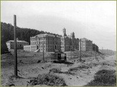
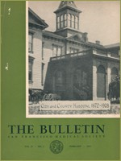
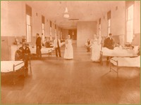

Plans for a New Teaching Hospital
“The student of medicine has his place in the hospital as part if its machinery just as much as he has in the anatomical laboratory, and ...to combine successfully in his education practice with science, the academic freedom of the university must be transplanted to the hospital.”
- William Osler
- William Osler

While the Medical and Dental Departments and the College of Pharmacy adjusted to the impact of major curriculum reform and the elusive promise of research activities, President Wheeler redoubled his efforts to improve the clinical side of medical instruction. He clearly wanted the University of California to be regarded as a center for medical science that ranked alongside Berlin, Paris, Johns Hopkins, and Harvard. In 1902 he revealed his plans for the development of a University teaching hospital "based on the newer scientific development of medicine."
Campus with streetcar.

But, he cautioned, "science in this sense would not be construed as a heedlessly impersonal idea, careless of the needs and sufferings of humanity, but rather as the one thing which will do much to make the prevention of these conditions possible." Wheeler felt that once the Affiliated Colleges had a teaching hospital, "the University would be then free to call to the clinical chairs the best men in the county, and offer them, in the shelter of its walls, an opportunity to devote their lives to the treatment of the sick, the teaching of students and the solution of some of the perplexing problems in medicine."
The old City County Hospital is featured here in a historical edition of the Bulletin of the San Francisco Medical Society, 25 (February 1952).

The clinical facilities used by the Medical Department by this time were severely overtaxed. The City and County Hospital had been built on the Portrero site in 1872 as an exemplar of order and cleanliness, but it quickly became overcrowded and within one year of its opening, patients were being placed in the chapel. The UC Medical Department operated a public dispensary for the needy and sick at the corner of New Montgomery and Howard streets, and a series of emergency hospitals were built at strategic points throughout the city, but no fewer than six medical schools had to share intern and ward assignments at the City and County Hospital. The positive effects of new additions to the original building were gradually offset by meager budgets, poor maintenance and political scandal. This decline in available clinical facilities for medical instruction was suddenly and abruptly accelerated in spring of 1906.
Nurses, interns, and attending physicians in the men’s ward at the old City County Hospital. This hospital provided teaching material for five medical schools, including UC and Stanford.
>> The 1906 Earthquake and Response
{% include footer.html %}